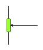
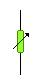
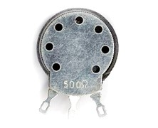
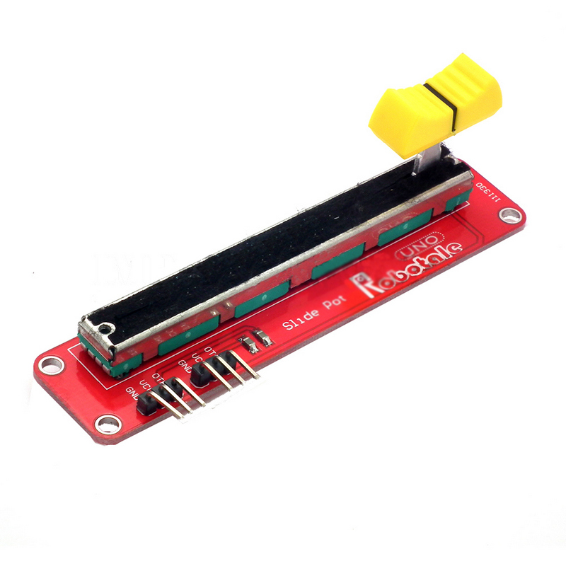
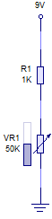

Un potenciómetro es una resistencia que se puede ajustar manualmente entre 0 y el valor nominal que aparece indicado sobre él. Para ello se acciona un mando o palanca que lleva incorporado, al que llamamos cursor. El cursor puede girarse (potenciómetro rotatorio) o desplazarse (potenciómetro lineal).
Un potenciómetro tiene tres terminales (A,B y C o central). Entre los dos extremos (A y B), el valor óhmico es el nominal. Entre cualquiera de los extremos y C obtenemos un valor óhmico ajustable al mover el cursor, y que siempre será inferior al valor nominal. Dicho valor nominal puede ir desde unos pocos ohmios hasta los megaohmios (MΩ).
|  |  |
| Símbolo del potenciómetro con tres terminales | Símbolo del potenciómetro con dos terminales. |
El potenciómetro se representa con uno de estos símbolos, indicando sobre la figura el valor máximo que puede alcanzar la resistencia.
Se emplea como regulador de la intensidad que atraviesa un circuito (o una parte de él). Gracias a un potenciómetro, podremos ajustar la sensibilidad de nuestros circuitos: modificar el umbral de disparo bajo luminosidad, la sensibilidad a la temperatura, etc.
|  | |
| Algunos potenciómetros comerciales | |
Podemos ver un uso de un potenciómetro en este circuito, que se llama montaje en divisor de tensión:
